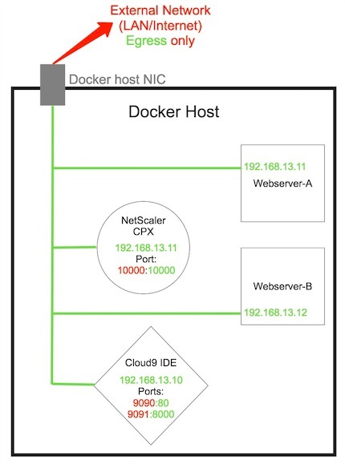

| Module 0 | Module 1 | Module 2 | Module 3 |
|---|
Module 3: Using Docker Compose
Let’s assume by now you are familiar with basic Docker commands such as docker run, docker ps, docker pull, docker rm, and the various parameter flags (such as -v for volume mounts) associated with some of these commands.
It should also be obvious at this point that deploying docker containers at scale by hand with docker run commands can be very involved and, at time, too complicated with multiple lines of docker .. commands to deploy a large environment. Luckily, docker containers are not meant to be deployed via individual commands, rather they are often deployed to a desired state using various other tools that help automate and/or orchestrate microservices backed by docker containers. Some of these accompanying tools are provided below for reference.
| Docker Tool | Details |
|---|---|
| Kubernetes | Google’s container orchestration and automation solution to schedule and maintain service state of docker containers. |
| Mesos/Marathon | Another Automation platform (Mesos) with an orchestration framework (Marathon) to ensure service state of docker containers. |
| Rancher | One of my favorites, complimentary to K8. Rancher is an opensource container management solution that makes it easy to deploy and manage containers in their own ‘Cattle environments’ and can even operate and manage other orchestration platforms like Kubernetes, Mesos/Marathon, and Docker Swarm. |
| Docker Swarm | Docker’s solution to automation and orchestration of clustered resources to provide a pool of Docker hosts into a single, virtual Docker host. |
| Docker Compose | A automation tool for defining and running multi-container Docker applications. This tool is less sophisticated than the ones listed above and more simpler to use but with fewer features for larger deployments at scale. |
In this module, we will be focusing on learning how to use Docker Compose to provision a self contained development environment based on a single input file that describes our desired state and configuration.
Docker Compose
Source of description comes from Docker’s documentation.
Compose is a tool for defining and running multi-container Docker applications. With Compose, you use a Compose file to configure your application’s services. Then, using a single command, you create and start all the services from your configuration.
Using Compose is basically a three-step process.
Step 1: Define your container with a Dockerfile so it can be reproduced anywhere. Either have provide the Dockerfile as an input or have the defined container hosted in a docker registry like docker hub.
Step 2: Define the containers that make up your microservices in a docker-compose.yml file so it can be run together with other containers in an isolated environment. The docker-compose.yml basically consist of key : value pairs as per the yaml syntax describing the desired state of your services.
Step 3: Lastly, run the command docker-compose up and Compose will start and run your entire microservice based app as per the desired state.
Overview
In this module, we are going to automate the deployment of a simple, self contained, dockerized sandbox environment to write scripts that issue NITRO commands to your NetScaler ADCs. In this case we will be issuing commands to a NetScaler CPX that will be locally provisioned on your machine to load balance simple containerized websites. However, it should be noted that this tutorial can be translated to develop and issue commands against other NetScaler ADCs as well if desired.
The desired environment will have the following topology:
| Services | Details |
|---|---|
| Webserver A | Static containerized HTTP website |
| Webserver B | Static containerized HTTP website |
| NetScaler CPX | This will be the target NetScaler to send NITRO API calls to load balance webserver A and webserver B. |
| Cloud9 IDE | Web-based Interactive Developer Environment that allows for rapid scripting and coding through a web browser. |
All the services above will be isolated in a dedicated Docker Network. Individual web interfaces that we will need direct external access to will have external ports mapped to the container for access from the underlay network (basically your host’s LAN).
Exercise 1 : Create docker-compose.yaml
Instead of creating a docker-compose.yml file from scratch, we are going to copy one from another repository to get started. We will then examine the file and understand it’s anatomy before finally making edits to suite our environment needs.
Step 1
To get started, enter the following commands to clone a repository with a docker-compose.yml file already made for us. Navigate to the directory and view the contents with nano.
1 | # Change directory to the workspace you want to clone the repository |
Here is a copy of the docker-compose.yaml file for reference. It is recommended you open it in another tab in your browser to follow along.
Below are the desired services we want to configure and deploy.
- Webserver A that is a static website site
- Webserver B that is a different static website
- Cloud9 IDE which we will use to write code and execute python scripts to automate configuration of NetScaler CPX.
- NetScaler CPX a NetScaler in a docker container that share the same API as other NetScaler ADCs.
Explaining the docker-compose.yml File
Below are snippets of the docker-compose.yaml with comments (#) per line with details of each key : value pairs describing the desired deployment.
Sandbox Network
With Docker you can define specific container networks. In this case we are creating a bridge network specific to deploying only our desired containers to within a SDN boundary internal to the host.
1 | networks: # This defines that below are settings for docker networks |
WebServer A / B
1 | webserver-a/b: # Service name |
1 | cpx: # Service Name |
1 | nitro-ide: # Service Name |
Note you may have to uncomment the
volumessection to mount volumes in the docker file that is pulled from the repository. Usenanoto remove the#from thevolumes:block.
Step 2
Set the environmental variable DATA_DIR to /data on the docker host. This environment variable will substitute the value /data into the docker compose file when we provision our containers. Type the following on your docker host:
1 | export DATA_DIR="/data"` |
Verify that the environmental variable was set successfully by typing the following command:
1 | echo $DATA_DIR |
It should return the /data directory path.
Review
In this module we clones a repository with our desired compose file. We explored what constitutes a docker-compose.yml file and what the various parameters mean. We set the value /data for a placeholder in the compose file that took in an environment variable to specify which local directory will be mapped to our IDE’s local workspace /workspace so we can share data from host to container.
Here is an overview of configuration steps:
Exercise 2 : Compose an Environment
Once you have your docker-compose.yaml set, you can move forward with provisioning your environment.
Step 1 : Provision an Environment
In the /data/nitro-ide directory, enter the following commands:
1 | # Navigate to the repository local to your host |
The
-din thedocker-compose up -dspecifies that containers run in the background in detached mode.
You should observe an output similar to the following:
1 | Pulling cpx (store/citrix/netscalercpx:12.0-41.16)... |
You can validate your desired containers are running by issuing a docker ps command to see all running containers.
1 | CONTAINER ID IMAGE COMMAND CREATED STATUS PORTS |
Step 2 : Access your IDE
Once all your containers are running successfully, navigate to your IDE’s web console. On your local machine, go to url http://localhost:9090.
Please wait up to 60 seconds for the IDE and CPX to fully load before they are accessible via the web console. Usually services are available within 30 seconds of deployment.
You should be greeted with Cloud9’s loading page and then ultimately the IDE editor pane. Within the side pane you should notice your workspace directory and within that directory you should see the nitro-ide repository on your docker host.
You can select any file to open and edit it or to examine it. You even have access to the container’s CLI terminal in the bottom pane. In the container’s CLI pane within Cloud9 IDE, enter the following commands:
1 | git clone -b cpx-101 https://github.com/Citrix-TechSpecialist/NetScalerNITRO.git |
Step 3 : Execute Script from IDE
A new directory will have been created NetScalerNITRO with the nsAuto.py python script that is pre-coded to configure the CPX to loadbalance webserver-a and webserver-b.
In the bottom pane within the container’s CLI, enter the following commands to configure the CPX via NITRO scripted with Netscaler’s Python SDK. Desired state configuration is specified in the nsAutoCfg.json file with pre-seeded default values for our environment (i.e. backend webserver IP’s and CPX default username and pass along with its NSIP.)
It is highly encouraged to open the
nsAuto.pyandnsAutoCfg.jsonfile within the IDE to examine and learn from its contents and understand how the script is coded with NetScaler’s NITRO Python SDK.
1 | cd NetScalerNITRO |
You will see an output similar to:
1 | Configuring NS |
This indicates that the CPX has been configured successfully. It is load balancing Webserver A and Webserver B on its port 10000, using it’s docker container IP in the sandbox docker network. Container port 10000 is mapped to host port 10000 so you can access your load balancer at http://localhost:10000.
Step 4 : Validate Configurations
To validate the configurations on the NetScaler CPX, enter the following commands on the Docker host to attach to the container’s bash terminal:
docker exec -it nitroide_cpx_1 /bin/bash and you will have entered into CPX’s CLI.
Then enter in the following NetScaler CLI commands to view configured vservers on the ADC with the following command:
cli_script.sh "sh lb vservers" and you will see an output similar to the following for the configured vserver:
1 | 1)webserver (192.168.13.20:10000) - HTTPType: ADDRESS |
Review
In this exercise we deployed a sandbox development environment with an IDE, NetScaler CPX, and 2 simple webservers using docker compose. We then logged into the IDE and cloned a repository with python code that will automatically configure the NetScaler CPX using the pre-defined input file nsAutoCfg.json that provides details on the desired configuration state of the CPX. We validated that the websites were being load balanced and saw the running load balancer configuration on the CPX.
Here is an overview of the procedures above: